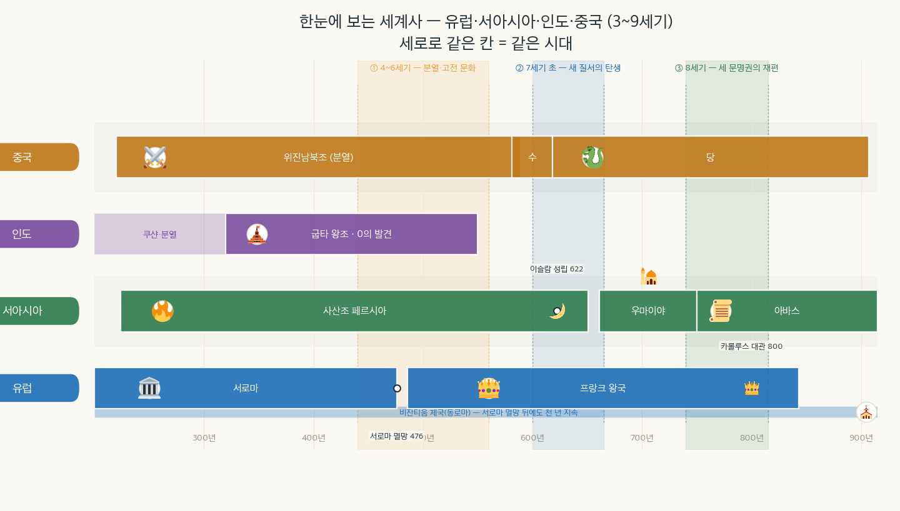
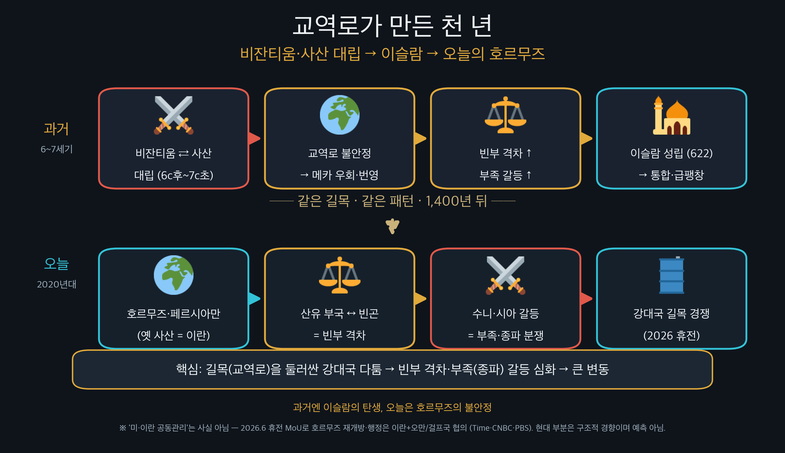

고대와 중세는 뭐가 다를까? 그때 우리 한반도는? (3~15세기 시대 구분·비교 연표)
🎙️ 한 반에서 친구들을 키 순서로 세우면 누가 크고 작은지 한눈에 보이지? 역사도 똑같아. 지역별로 따로 배우면 헷갈리지만, 한 시간축에 나란히 세우면 누가 같은 시대였는지 바로 보여. 오늘은 그 '세계사 줄 세우기'를 해 보자. 그리고 하나 더 — 맨 아랫줄엔 그때 우리 한반도를 놓을 거야. "서로마가 무너질 때 우리는 뭘 하고 있었지?" 이게 오늘의 재미 포인트야.
- 고대·중세·근대의 시대 구분이 무엇을 기준으로 나뉘는지 설명할 수 있다.
- 중국·인도·서아시아·유럽·한반도의 주요 나라를 같은 시간축 위에서 비교할 수 있다.

위 연표에서 세로로 같은 위치 = 같은 시대. 맨 위 굵은 띠가 고대 | 중세 | 근대, 맨 아랫줄이 그때 우리 한반도야. 오른쪽 흐린 부분은 앞으로 배울 곳이니 지금은 눈으로만 훑고 지나가면 돼.
'중세'라는 말은 앞으로 계속 나오는데, 정작 그게 언제부터 언제까지인지 짚고 넘어간 적이 없다. 유럽의 역사에서는 보통 ①제국이 멸망한 476년을 고대의 끝이자 중세의 시작으로 보고, ②제국(동로마)이 멸망한 1453년을 중세의 끝으로 본다.
🎙️ 그런데 여기서 중요한 게 하나 있어. 이 경계선은 그 시대 사람들이 그은 게 아니야. 476년에 살던 사람이 "오늘부터 중세다!" 하고 달력에 표시했을까? 아니지. 훨씬 뒤에 살던 사람들이 돌아보면서 붙인 이름이야.
⚠️ '중세=암흑시대'는 편견이야. '중세(中世)'라는 이름 자체가 "고대와 우리 시대 사이에 낀 어중간한 시기"라는 뜻으로, 한참 뒤 사람들이 자기들을 돋보이게 하려고 붙인 별명이었어. 실제로 이 시기에 이슬람 세계는 과학이 꽃피웠고, 우리 한반도에서는 고려청자가 만들어졌지. 역사의 이름은 '누가 붙였느냐'를 같이 봐야 해.
| 시기 | 중국 | 인도 | 서아시아 | 유럽 | 한반도 |
| 3세기 | 위진남북조 시작 | 쿠샨·분열 | ③성립(224) | 로마 제국 | 삼국 |
| 4~6세기 | 위진남북조(분열) | ④왕조 | 사산조 페르시아 | ⑤멸망(476)·비잔티움 | 삼국 |
| 7세기 | 수 → ⑥ | 분열 | ⑦성립(622)·사산 멸망 | 프랑크 왕국·비잔티움 | ⑧의 삼국 통일(676) |
| 8세기 | 당 | 분열 | 우마이야→⑨ | ⑩대관(800) | 통일신라·발해 |
(교과서 근거: 위진남북조·수·당=p.62~72 / 굽타=p.78 / 사산조 페르시아·이슬람=p.76·82 / 서로마 멸망·프랑크·비잔티움=p.86~88 — 비상교육 역사①(이병인))
이 시기에는 거대 제국이 무너지거나 갈라지는 한편, 각 지역에서 고전 문화가 무르익었다. 중국은 위진남북조로 ⑪되어 있었고, 인도는 ⑫왕조의 황금기(0의 발견·산스크리트 문학)였으며, 서아시아는 사산조 페르시아, 유럽은 ⑬제국이 멸망(476)하였다.
⚠️ 묶어서 기억! 굽타(인도) · 사산(서아시아) · 위진남북조(중국) 가 거의 같은 시대(4~6세기)야. 그리고 그 끝 무렵 서로마가 멸망(476)했지. "굽타=사산=위진남북조=서로마 멸망 직전" 한 묶음!
🇰🇷 그때 우리는? 아직 삼국이 한창 겨루던 때야. 서로마가 무너지던 무렵, 한반도에서는 고구려가 가장 강했지.
7세기 초는 세계 곳곳에서 새 질서가 솟은 때다. 중국에서는 수에 이어 ⑭이 세워졌고(618), 서아시아에서는 ⑮교가 성립하였으며(622), 그 세력이 사산조 페르시아를 멸망시켰다(651). 유럽에서는 비잔티움 제국이 유스티니아누스 황제 때 전성기를 누렸다.
💡 거의 동시! 당 건국(618) ≈ 이슬람 성립(622). 그 무렵 사산조 페르시아가 이슬람 세력에 멸망(651). 즉 동아시아·서아시아가 같은 7세기 초에 크게 바뀐 거야.
🇰🇷 그때 우리는? 신라가 삼국을 통일해(676) 한반도에도 새 질서가 섰어. 7세기는 세계 곳곳이 동시에 갈아엎어진 세기인 셈이야.
8세기에는 세 문명권이 새 주인공으로 재편되었다. 서아시아는 우마이야에서 ⑯왕조로 바뀌었고(750), 그 직전 ⑰전투(751)에서 당과 충돌하며 제지술이 서쪽으로 전해졌다. 유럽에서는 카롤루스 대제가 서로마 황제의 관을 받아(800) 서유럽 문화의 기틀을 세웠다.
🎙️ 8세기는 아바스(서아시아)·당(동아시아)·카롤루스의 프랑크(유럽) 가 세계를 삼분한 시대야. 탈라스 전투(751)에서 당과 아바스가 맞붙은 건, 동아시아와 서아시아가 직접 만난 상징적 사건이지(제지술 전파!).
연표 맨 위 유럽 줄을 보면 서로마 제국이 476년에 끊긴다. 그런데 그 바로 아래 비잔티움 줄은 끊기지 않고 1453년까지 쭉 이어진다. 즉 "로마가 476년에 멸망했다"는 말은 정확히는 서로마만 멸망했다는 뜻이고, 동로마(비잔티움)는 그 뒤로도 천 년 가까이 더 이어졌다.
🎙️ 이게 왜 재미있냐면 — 중세라는 시대의 시작(476)과 끝(1453)이 곧 비잔티움 제국이 홀로 버틴 기간이거든. 연표에서 중세 띠와 비잔티움 막대가 거의 같은 길이인 게 보이지? 서유럽이 무너지고 새로 만들어지는 내내, 동쪽에서는 로마가 계속 살아 있었던 거야.

🎙️ 위 연표에서 6세기 후반~7세기 초를 보면, 비잔티움과 사산조 페르시아가 나란히 붙어 있지? 이 무렵 두 나라는 오래 치고받았어. 두 강대국이 길목에서 싸우니 기존 동서 교역로가 위험해졌고, 상인들은 사막의 메카로 길을 돌렸지. 메카는 갑자기 부유해졌지만 그만큼 빈부 격차가 커지고 부족 간 갈등도 심해졌어. 바로 그때 무함마드가 평등·나눔(자카트)을 외치는 이슬람으로 사람들을 묶었고(622), 전쟁으로 지친 사산조는 곧 무너졌단다(651).
🌏 오늘과 잇기: 그 페르시아만 길목이 바로 오늘날 호르무즈 해협이야(옛 사산 = 지금의 이란). 지금도 이 길목을 둘러싸고 강대국이 다투고, 산유 부국과 가난한 이주노동자의 빈부 격차, 수니·시아 종파 갈등이 얽혀 있지. 길목을 다투면 그 압력이 빈부·갈등으로 번진다 — 1,400년 전 패턴이 되풀이되는 셈이야.
⚠️ (사실 확인) 최근 들리는 "미국·이란이 호르무즈를 공동관리한다"는 정확하지 않아. 2026년 6월 휴전 합의로 해협을 다시 열기로 했고, 관리 방식은 이란이 오만·걸프 나라들과 협의해 정하기로 했어. '앞으로 무슨 일이 생길지'는 아무도 단정 못 해 — 우리는 구조(빈부·갈등)만 읽는 거야.
| 번호 | 문장 | O/X |
| 1 | 인도의 굽타 왕조와 서아시아의 사산조 페르시아는 거의 같은 시대에 있었다. | |
| 2 | 이슬람교 성립(622)은 당 건국(618)보다 수백 년 뒤의 일이다. | |
| 3 | 서로마 제국이 멸망(476)할 무렵, 중국은 위진남북조로 분열되어 있었다. | |
| 4 | 카롤루스 대제의 대관(800)과 아바스 왕조 성립(750)은 모두 8세기의 일이다. | |
| 5 | 탈라스 전투는 당과 아바스 왕조가 충돌하여 제지술이 서쪽으로 전해진 계기였다. | |
| 6 | 서로마 제국이 멸망한 뒤에도 비잔티움 제국(동로마)은 천 년 가까이 이어졌다. | |
| 7 | 신라가 삼국을 통일할 무렵, 서아시아에서는 이미 이슬람교가 성립해 있었다. | |
| 8 | '중세'라는 이름은 그 시대를 살던 사람들이 스스로 붙인 것이다. |
연표에서 '중세'는 서로마 제국이 멸망한 때부터 비잔티움 제국이 멸망한 때까지야. 그 긴 시간 동안 우리 한반도에는 어떤 나라들이 있었는지 순서대로 쓰고, 그중 한 나라를 골라 같은 시기 유럽에는 무엇이 있었는지 함께 써 보자.